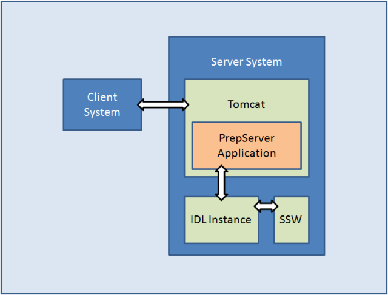

The intention of this document is to describe the PrepServer, and to explain how to set it up and how to troubleshoot it.
The PrepServer is a Java web application that runs in an Apache Tomcat and has an interface to an SolarSoftware (SSW) enabled IDL instance. Thus, the PrepServer application bridges between the client web requests, that are managed by Tomcat, and the server side IDL instance, which performs the actual preprocessing (see Figure 1).
 Figure 1: An overview of the PrepServer system setup
The below sequence provides a step-by-step example prep-request. The client system is an IDL PrepServer client.
Please note: For futher help, move your mouse over . If you do so and no help window appears, you might have to activate Java Scripting for this session. Check if there is a message below your browser's address bar indicating it.
Please note: ... indicates that code was left out for simplification.
The following happens on the client machine, in an SSW enabled IDL session.
IDL> file = vso_files('21-apr-2002 01:15', inst='eit')
IDL> vso_prep, 'eit', file, out='eit.fits', /cosmic
vso_prep internally creates a vxo_prep objec and calls that object's preprocessing routine with the same arguments from above.
pro vso_prep,inst,file,outfile=outfile,_extra=extra,status=status
...
vxoprep = obj_new('vxo_prep')
vxoprep->preprocess, inst, file, outfile=ofile, _extra=extra
...
end
vxo_prep is a wrapper object that encapsulates a Java object which does the actual communication between the client and the server. Therefore, when vxoprep was created, it also created a Java object of the type VxoPrepClient. Because the Java object will eventually send the request to the server, the preprocessing arguments must be converted, such that Java can handle them. This happens in vxo_prep when vxoprep->preprocess is called.
pro vxo_prep::preprocess, instrument, infile, outfile=outfile, _extra=parameters
...
prepParamSet = self.vxoPrep->createPrepParameterSet(instrument)
if block begin
file is empty: do nothing
file is url: prepParamSet->setUrl, infile
file is local: prepParamSet->setRawData, self.vxoPrep->readByteArrayFromFile(infile)
file is byte array: prepParamSet->setRawData, infile
if block end
for block begin
for all parameters: self.vxoPrep->addParameter, prepParamSet, pName, pValue
for block end
self.vxoPrep->preprocess(prepParamSet, ofile)
...
end
Before continuing it is advisable to have a closer look at what happens when VxoPrepClient->addParameter(...) is called. All parameters
are stored as arrays. This is because IDL handles a single integer the same as an array of integers with only one entry. In Java on the other
hand it makes a difference. Since there are parameters that require arrays and others that don't, it was decided to always use
arrays. In order to enforce the usage of arrays and persist the orignial value's data type, helper methods had to be added to VxoPrepClient.
The following block shows how integers and arrays of integers are handled. All other data types are dealt with using the same technique.
Please note: This technique works because Java knows the type of whatever is received from IDL and will therefore select the addParameter
which is the most suitable.
public void addParameter(PrepParameterSet paramSet, String paramName, int value) {
addParameterGen(paramSet, paramName, value);
}
public void addParameter(PrepParameterSet paramSet, String paramName, int[] value) {
addParameterGen(paramSet, paramName, value);
}
private void addParameterGen(PrepParameterSet paramSet, String paramName, Object value) {
PrepParameter pp = new PrepParameter();
if(!value.getClass().isArray())
pp.getValue().add(value);
else
for(int i = 0; i < Array.getLength(value); i++)
pp.getValue().add(Array.get(value, i));
pp.setName(paramName);
paramSet.getParameters().add(pp);
}
In the Java object VxoPrepClient there is only a little code necessary to handle the communication between the client and the server. That is because the server provides a WSDL (Web Service Description Language) file (currently that can be found at Wilco. That file contains a detailed description of the PrepServer's services and communication objects. Modern lanuages like Java or C++ can read and interpret that definition file and automatically generate object definition files from it. These automatically generated objects have two main purposes: a) They handle the communication with the web service, and b) they serve as blueprints for objects that can be used on the client side. As a matter of fact, the object PrepParameterSet is just such an object.
public PrepResponse preprocess(PrepParameterSet parameters, String file) {
...
byte[] result = server.preprocess(parameters);
...
}
The pre-process call will establish a connection to the web service, i.e. http://wilco.gsfc.nasa.gov:8080/VxoPrepServer/vxoprep.
After the client has establised a connection to the server and called the pre-processing routine, it passes on control to the server and waits for it to return. The server then initiates its internal preprocessing routine.
@WebMethod public PrepResponse preprocess(PrepParameterSet parameters) {
...
PrepService ps = PrepServerService.createPrepService(parameters.getInstrument());
...
}
GenPrepService is the core handler for the pre-processing on the Java side. Its prep routine takes care of the parameter conversion (in order for them to be passed on to IDL) and their transfer from Java to IDL and back. Special attention must be given to the Java class Preprocessor. This is an auto-generated Java class which bridges between IDL and Java. The corresponding IDL object on which this Java class is based on is called Preprocessor__define.
public byte[] prep(PrepParameterSet parameters) {
...
Preprocessor prep = new Preprocessor();
prep.createObject();
prep.addIDLOutputListener(this);
...
String instrument = parameters.getInstrument();
prep.setInstrument(new JIDLString(instrument));
if block begin
if input file is url: get file and save it to disk
if input file is raw data: write raw data to disk
if input file is empty: leave it empty
if block end
for block begin
for all parameters: convert Java data type to the corresponding IDL data type
for all parameters: prep.addArgument(new JIDLString(p.getName()), new JIDLArray(convertedArray));
for block end
...
prep.setInfile(new JIDLString(infile.getPath()));
prep.setOutfile(new JIDLString(outfile.getPath()));
prep.preprocess();
...
return ret;
}
Before the actual pre-processing routine can be analyzed it is advisable to have a look at Preprocessor::addArgument. Since it was a goal to persist all data types all along the way from the client to the server, addArgument and preprocess had to provide ways to ensure that all data types were correctly converted from their Java versions to their IDL counterparts and vice-versa. Additionally, preprocess had to be written such, that the types were preserved even when calling the SSW IDL pre-processing routines. This is achieved by adding all pre-processing parameters to an IDL structure that is growing while new parameters are added.
PRO preprocessor::addArgument, argName, argValue
IF (PTR_VALID(self.arguments)) THEN BEGIN
newStr = CREATE_STRUCT(argName, argValue, *self.arguments)
PTR_FREE, self.arguments
self.arguments = PTR_NEW(newStr);
ENDIF ELSE BEGIN
newStr = CREATE_STRUCT(argName, argValue)
self.arguments = PTR_NEW(newStr);
ENDELSE
END
The block below shows what Preprocessor::preprocess does. Generally, it tries to create an SSW object for the specified instrument type, such as eit or rhessi. Then it reads all parameters from the internal structure *self.arguments and compiles a string that can be interpreted by the instrument's read routine. If the pre-processing is successful, the pre-processed image is written to a file that will be read by GenPrepServer (see previous section).
PRO preprocessor::preprocess
p = OBJ_NEW(self.instrument)
...
IF PTR_VALID(self.arguments) THEN BEGIN
argStr = *self.arguments
argNames = TAG_NAMES(argStr);
FOR i = 0, N_TAGS(argStr) - 1 DO BEGIN
paramString = paramString + ', ' + argNames(i) + '=(*self.arguments).(' + STRCOMPRESS(STRING(i), /REMOVE_ALL) + ')'
ENDFOR
ENDIF
res = EXECUTE('CALL_METHOD, "read", p, "' + self.infile + '"' + paramString)
p->write, self.outfile
OBJ_DESTROY, p
END
After the end of the above routine is reached, the control is given back to GenPrepService and the data is passed on back to each previously called routine and finally streamed to the client.
In order to run the PrepServer application, the following must be available:
Please note: This Step-by-Step installation is based on Linux/Unix/Mac. A Windows installation works basically the same with some differences. Might add them in a later release.
First, make sure Java 6 is available. If not, get it from here and install it. After the installation, make sure that the system variables JAVA_HOME is set and points to where Java was copied to.
Next check if IDL 7 is available. If not, install it from the CD.
Then see if SSW and all necessary instrument packages are on the system. If not, help installing and setting it up can be found here.
Basically, there is a standard installation of Tomcat necessary. The binaries can be found here and
help setting it up here. Make sure that
CATALINA_HOME is set ant points to the Tomcat installation directory.
Special attention should be paid to the security issues, like read, write and execute right on file level.
If the host operating system is Linux/Unix/Mac, then download the SSW environment scripts from here and copy them into the CATALINA_HOME/bin directoy. Then make the scripts in ssw_setup executable, and apply the following changes to expssw.sh in ssw_setup:
# Set this to IDL 7.0's installation directory
IDL_DIR=/Applications/itt/idl70/
...
# Set this to SSW's installation directory
export SSW=/Users/softw/ssw
...
# Add here all supported instruments
export SSW_INSTR="eis hxt cds eit mdi xrt sxt secchi hessi spex xray trace"
Tomcat needs to execute the above scripts in order to run in an SSW enabled environment. Therefore, the following line must be added to CATALINA_HOME/bin/catalina.sh (NOT if server runs on Windows!):
...
# ----- Execute The Requested Command -----------------------------------------
CLASSPATH="$CLASSPATH:$JAVA_IDL_LIBS" # This line should be in the code already. Don't add it!
source $CATALINA_HOME/bin/ssw_setup/expssw.sh
...
The final step is to deploy the VxoPrepServer.war. Before you do so, open up a new console and keep an eye on Tomcat's console output by typing tail -f $CATALINA_HOME/logs/catalina.out (does not work under Windows). Then deploy the application by simply copying the application archive to CATALINA_HOME/webapps. Folollow the output to catch error messages.
Server output can be tracked in a console window by the following command:
tail -f $CATALINA_HOME/logs/catalina.out
This happens when an instrument tries to write something out to an active display. Because the server runs in the background, there is no such display available. Generally, such display requests should be taken care of in the instrument routines. And the server should not try to display any of those messages. This is because a pop-up that requests user interaction could block the server from proceeding. Therefore, it is wiser to let the pre-processing be interrupted and fixed that allowing it to print out messages to the screen. Nevertheless, the following script creates a Virtual Frame Buffer that emulates a virtual screen to which data can be printed to. Just be aware, that this might lead to a blocking server.
Linux:
cat "localhost" > /tmp/X11.cfg
Xvfb :123 -auth /tmp/X11.cfg -screen scrn 800x600x32 2>/dev/null &
Mac:
Xvfb :123 -screen 0 800x600x24 2>/dev/null &